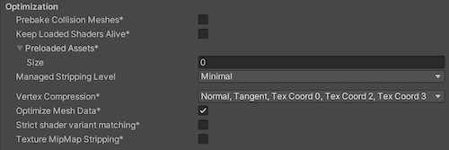

UWP Player settings
To access the Universal Windows Platform (UWP) Player settings, go to Edit > Project Settings > Player from the main menu in Unity. Use the Player settings to determine how Unity builds and displays your final application. For a description of the general Player settings, refer to Player SettingsSettings that let you set various player-specific options for the final game built by Unity. More info
See in Glossary.

Documentation for the properties is grouped according to their respective sections in the Player UI(User Interface) Allows a user to interact with your application. Unity currently supports three UI systems. More info
See in Glossary:
Icon
Use the Icon settings to customize the branding for your app on the Microsoft Store.
The Icon section displays warnings for any images that are required for certification but haven’t been assigned. A UWP application must specify icon and logo images as part of the package before you can submit it to the Microsoft Store.
Note: You can also choose the image types and their sizing within the API. For more information, refer to PlayerSettings.WSAImageType and PlayerSettings.WSAImageScale.
Expand the Store Logo section to specify the image that appears on the Store description page for the application. You can add up to eight different resolutions.
Tile
Customize the general appearance of your Microsoft Store tiles with these settings:
| Property | Description | |
|---|---|---|
| Short name | Sets an abbreviated name for the app. | |
| Show name on | Indicates each icon image you want the name to appear on: Medium Tile, Large Tile, or Wide Tile. | |
| Foreground text | Chooses whether to use Light or Dark text on the app’s Tile. | |
| Background color | Specifies what color to use for the background. | |
| Default Size | Chooses which size you want to use as the default size for the Tile. | |
| Not Set | Don’t use a default size. | |
| Medium | Use a medium size. | |
| Wide | Use a wide size. | |
Unity copies these options directly to the Package.appxmanifest file.
Tiles and Logos
Specify the images your tiles display on the Microsoft Store with these settings:
| Property | Description |
|---|---|
| Square 44x44 Logo | Set a 44x44 logo image to use on the app’s tile. You can set up to 10 resolutions. |
| Square 71x71 Logo | Set a 71x71 logo image to use on the app’s tile. You can set up to 5 resolutions. |
| Square 150x150 Logo | Set a 150x150 logo image to use on the app’s tile. You can set up to 5 resolutions. |
| Square 310x310 Logo | Set a 310x310 logo image to use on the app’s tile. You can set up to 5 resolutions. |
| Wide 310x150 Logo | Set a 310x150 logo image to use on the app’s tile. You can set up to 5 resolutions. |
Resolution and Presentation
Use the Resolution and Presentation section to customize aspects of the screen’s appearance.

| Property | Description |
|---|---|
| Default is Full Screen | Sets the app window to the full-screen native display resolution, covering the whole screen. This mode is also known as borderless full-screen. Unity renders the app content at the resolution set by a script, or the native display resolution if none is set and scales it to fill the window. When scaling, Unity adds black bars to the rendered output to match the display aspect ratioThe relationship of an image’s proportional dimensions, such as its width and height. See in Glossary to prevent content stretching. This process is called letterboxing. |
| Run In Background | Indicates whether to keep the game running (rather than pausing) if the app loses focus. |
| Allow Fullscreen Switch | Indicates whether to allow default OS full-screen key presses to toggle between full-screen and windowed modes. |
| Transparent Swapchain | Indicates whether to set AlphaMode on the swap chain to DXGI_ALPHA_MODE_PREMULTIPLIED. This setting is used only for UWP projects that use the XAML build type. By enabling this setting, you can compose Unity content with other XAML content in your application. For more information, refer to PlayerSettings.WSA.transparentSwapchain. |
Orientation
Choose the game’s screen orientation from the Default Orientation drop-down menu:
| Property | Description | |
|---|---|---|
| Default Orientation | Specify the orientation of the application window within the device’s screen. Note: Unity shares the value you set for this setting between Android, iOS, and UWP. |
|
| Portrait | Portrait orientation where the bottom of the application aligns with the bottom of the screen. | |
| Portrait Upside Down | Portrait orientation where the bottom of the application aligns with the top of the screen. | |
| Landscape Right | Landscape orientation where the right side of the application aligns with the top of the screen. | |
| Landscape Left | Landscape orientation where the left side of the application aligns with the top of the screen. | |
| Auto Rotation | The screen can rotate to any of the orientations you specify in the Allowed Orientations for Auto Rotation section. | |
Allowed Orientations for Auto Rotation
Use the Allowed Orientations for Auto Rotation section to specify which orientations the application supports when you set Default Orientation to Auto Rotation. This is useful, for example, to lock the application to landscape orientation but allow the user to switch between landscape left and landscape right.
Note: This section is visible only when Default Orientation is set to Auto Rotation. Enable each orientation by checking its box in this section:
| Property | Description | |
|---|---|---|
| Portrait | Allow portrait orientation with the bottom of the application aligned with the bottom of the screen. | |
| Portrait Upside Down | Allow portrait orientation with the bottom of the application aligned with the top of the screen. | |
| Landscape Right | Allow landscape orientation with the right side of the application aligned with the top of the screen. | |
| Landscape Left | Allow landscape orientation with the left side of the application aligned with the top of the screen. | |
Splash Image
Above the common Splash Screen settings, the Player Settings settings allow you to specify splash images for UWP.
Use the Virtual Reality Splash Image property to select a custom splash image to display in Virtual RealityVirtual Reality (VR) immerses users in an artificial 3D world of realistic images and sounds, using a headset and motion tracking. More info
See in Glossary displays.
Below the common Splash Screen settings, there are a few additional sections:
Windows
Set the foreground image to use in your app’s splash screen. You can add up to seven different resolutions.
Windows Holographic
Use these settings to customize the holographic splash image for Mixed RealityMixed Reality (MR) combines its own virtual environment with the user’s real-world environment and allows them to interact with each other.
See in Glossary applications.
Set a Holographic Splash Image to appear during startup. This image appears for five seconds (or until the app finishes loading).
Tracking Loss
A Mixed Reality headset needs to build world-locked coordinate systems from its environment to allow holograms to stay in position. Tracking loss occurs when the headset loses track of where it’s (can’t locate itself) in the world. This leads to a breakdown in spatial systems (spatial mapping, spatial anchors, spatial stages).
When this happens, Unity stops rendering holograms, pauses the game, and displays a notification. You can customize the notification image that appears by enabling the On Tracking Loss Pause and Show Image property, and then selecting the image to display with the Tracking Loss Image property.
For more information, refer to Recommended settings for Unity.
Overwrite background color
While your application initializes, UWP shows a Splash screen that appears before the Made with Unity Splash screen. It’s best practice to match the UWP Splash screen background to the Splash screen image because it’s more visually appealing. The default color is black.
To overwrite the UWP specific Splash screen background color:
- Go to Player Settings > Splash Screen and enable Overwrite Background Color.
- Choose a color from the Background Color selector.
If you overwrite the default background color, Unity changes the color value in the application manifest. If you are using the XAML application type, Unity also sets the color value in the initial XAML page.
Other Settings
This section allows you to customize a range of options organized into the following groups:
- Rendering
- Configuration
- Shader Settings
- Shader Variant Loading Settings
- Optimization
- Stack Trace
- Legacy
Rendering
Use these settings to customize how Unity renders your game for UWP.
| Property | Description | |
|---|---|---|
| Color Space | Choose which color space to use for rendering. For more information, refer to Linear rendering overview. | |
| Gamma | Gamma color space is typically used for calculating lighting on older hardware restricted to 8 bits per channel for the framebuffer format. Even though monitors today are digital, they might still take a gamma-encoded signal as input. | |
| Linear | Linear color space rendering gives more precise results. When you select to work in linear color space, the Editor defaults to using sRGB sampling. If your Textures are in linear color space, you need to work in linear color space and deactivate sRGB sampling for each Texture. | |
| MSAA Fallback | Select the multi sample antialiasing fallback strategy to upgrade or downgrade the sample count if the sample count requested by the user isn’t supported by the device. | |
| Upgrade | The sample count reduces to the nearest supported lower sample count. | |
| Downgrade | The sample count increases to the next higher sample count. If that sample count is not supported, then it reduces to the nearest supported lower sample count. | |
| Auto Graphics API | Indicates whether to manually pick and reorder the graphics APIs. This option is enabled by default and uses Direct3D11. | |
| Static Batching | Enable this option to use static batchingA technique Unity uses to draw GameObjects on the screen that combines static (non-moving) GameObjects into big Meshes, and renders them in a faster way. More info See in Glossary. |
|
| Dynamic Batching | Use Dynamic BatchingAn automatic Unity process which attempts to render multiple meshes as if they were a single mesh for optimized graphics performance. The technique transforms all of the GameObject vertices on the CPU and groups many similar vertices together. More info See in Glossary on your build (enabled by default).. Note: Dynamic batching has no effect when a Scriptable Render Pipeline is active. This setting is visible only when the Scriptable Render Pipeline Asset Graphics setting is blank. |
|
| Sprite Batching Threshold | Controls the maximum vertex threshold used when batching. | |
| GPU Compute Skinning | Enable the use of shaders to calculate mesh skinning and blend shapes on the GPU. | |
| Graphics Jobs | Offload graphics tasks (render loops) to worker threads running on other CPU cores. This option reduces the time spent in Camera.Render on the main thread, which can be a bottleneck. |
|
| Lightmap Encoding | Defines the encoding scheme and compression format of the lightmaps. You can choose from Low Quality, Normal Quality, or High Quality |
|
| HDR Cubemap Encoding | Defines the encoding scheme and compression format of the HDR Cubemaps. You can choose from Low Quality, Normal Quality, or High Quality. For more information, refer to Lightmaps: Technical information. |
|
| Lightmap Streaming | Enable this option to use Mipmap Streaming for lightmaps. Unity applies this setting to all lightmaps when it generates them. Note: To use this setting, you must enable the Texture Streaming Quality setting. |
|
| Streaming Priority | Set the priority for all lightmaps in the Mipmap Streaming system. Unity applies this setting to all lightmaps when it generates them. Positive numbers give higher priority. Valid values range from -128 to 127. |
|
| Frame Timing Stats | Enable this option to gather CPU/GPU frame timing statistics. | |
| Allow HDR Display Output | Enable HDR mode output when the application runs. If the display doesn’t support HDR mode, the game runs in standard mode. | |
| Use HDR Display Output | Checks if the main display supports HDR, and if it does, swaps to HDR output when the application launches. Note: This option is available only when Allow HDR Display Output is active. |
|
| Swap Chain Bit Depth | Select the number of bits in each color channel for swap chain buffers. This setting is available only when Use display in HDR Mode is enabled. |
|
| Bit Depth 10 | Unity uses the R10G10B10A2 buffer format and Rec2020 primaries with ST2084 PQ encoding. | |
| Bit Depth 16 | Unity uses the R16G16B16A16 buffer format and Rec709 primaries with linear color (no encoding). | |
| Virtual Texturing (Experimental) | Enable this option to reduce GPU memory usage and texture loading times if your Scene has many high resolution textures. For more information, refer to Virtual Texturing. Note: The Unity Editor requires a restart for this setting to take effect. |
|
| 360 Stereo Capture | Allows Unity to capture stereoscopic 360 images and videos. When enabled, Unity compiles additional shader variants to support 360 capture (only on Windows). When enabled, the enable_360_capture keyword is added during the Stereo RenderCubemap call. This keyword isn’t triggered outside the Stereo RenderCubemap function. |
|
| Load/Store Action Debug Mode | Highlights undefined pixels that might cause rendering problems on mobile platforms. This affects the Unity Editor Game view, and your built application if you select Development Build in Build Settings. Refer to LoadStoreActionDebugModeSettings for more information. | |
| Editor Only | Indicates whether the Load/Store Action Debug Mode only runs in the Unity Editor. Note: This option is visible only when Load/Store Action Debug Mode is active. |
|
Configuration

| Property | Description | |
|---|---|---|
| Scripting Backend | The scripting backend determines how Unity compiles and executes C# code in your Project. This setting defaults to IL2CPP for Universal Windows Platform and can’t be changed. | |
| API Compatibility Level | Choose which .NET APIs you can use in your project. This setting can affect compatibility with third-party libraries. However, it has no effect on Editor-specific code (code in an Editor directory, or within an Editor-specific Assembly Definition). Tip: If you are having problems with a third-party assembly, you can try the suggestion in the API Compatibility Level section below. |
|
| .Net Framework | Compatible with the .NET Framework 4 (which includes everything in the .NET Standard 2.0 profile plus additional APIs). Choose this option when using libraries that access APIs not included in .NET Standard 2.0. Produces larger builds and any additional APIs available aren’t necessarily supported on all platforms. Refer to Referencing additional class library assemblies for more information. | |
| .Net Standard 2.1 | Produces smaller builds and has full cross-platform support. | |
| IL2CPP Code Generation | Defines how Unity manages IL2CPP code generation. | |
| Faster runtime | Generates code optimized for runtime performance. This setting is enabled by default. | |
| Faster (smaller) builds | Generates code optimized for build size and iteration. This setting generates less code and produces a smaller build, but it might reduce runtime performance, especially for generic code. Use this option when faster build times are important, such as when iterating on changes. | |
| C++ Compiler Configuration | Chooses the C++ compiler configuration used when compiling IL2CPP generated code. Note: This property is disabled for the Universal Windows Platform because it’s chosen in the generated Visual Studio project. |
|
| Use incremental GC | Uses the incremental garbage collector, which spreads garbage collection over several frames to reduce garbage collection-related spikes in frame duration. For more information, refer to Automatic Memory Management. | |
| Allow downloads over HTTP | Indicates whether to allow downloading content over HTTP. The options are Not allowed, Allowed in Development builds only, and Always allowed. The default option is Not allowed due to the recommended protocol being HTTPS, which is more secure. | |
| Accelerometer Frequency | Defines how often to sample the accelerometer. If you choose Disabled, then no samples are taken. Otherwise, you can choose from 15Hz, 30Hz, 60Hz and 100Hz frequencies. | |
| Active Input Handling | Choose how to handle input from users. | |
API Compatibility Level
You can choose your mono API compatibility level for all targets. Sometimes a third-party .NET library uses functionality that’s outside of your .NET compatibility level. To understand what’s going on in such cases, and how to best fix it, try following these suggestions:
- Install ILSpy for Windows.
- Drag the .NET assemblies for the API compatibility level that you are having issues with into ILSpy. You can find these under
Data/MonoBleedingEdge/lib/mono/YOURSUBSET/. - Drag in your third-party assembly.
- Right-click your third-party assembly and select Analyze.
- In the analysis report, inspect the Depends on section. The report highlights anything that the 3rd-party assembly depends on, but that’s not available in the .NET compatibility level of your choice in red.
Shader Settings
| Property | Description | |
|---|---|---|
| Shader Precision Model | Select the default precision shaders use. For more information, refer to Use 16-bit precision in shaders. | |
| Platform default | Use lower precision on mobile platforms, and full precision on other platforms. | |
| Unified | Use lower precision if the platform supports it. | |
| Strict shader variant matching | Enable this option to use the error shader for rendering if a shader variant is missing in the Player build and display an error in the console. The error specifies the shader, subshader index, pass, and keywords used for shader variant search | |
| Keep Loaded Shaders Alive | Keep all loaded shaders alive and prevent unloading. For more information, refer to shader loading. | |
Shader Variant Loading Settings
Use these settings to control how much memory shadersA program that runs on the GPU. More info
See in Glossary use at runtime.
| Property | Description |
|---|---|
| Default chunk size (MB) | Sets the maximum size of compressed shader variant data chunks Unity stores in your built application for all platforms. The default is 16. For more information, refer to Shader loading. |
| Default chunk count | Sets the default limit on how many decompressed chunks Unity keeps in memory on all platforms. The default is 0, which means there’s no limit. |
| Override | Enables overriding Default chunk size and Default chunk count for this build target. |
| Chunk size (MB) | Overrides the value of Default chunk size (MB) on this build target. |
| Chunk count | Overrides the value of Default chunk count on this build target. |
Script Compilation
| Property | Description |
|---|---|
| Scripting Define Symbols | Sets custom compilation flags. For more details, see Platform dependent compilation. |
| Additional Compiler Arguments | Adds entries to this list to pass additional arguments to the Roslyn compiler. Use one new entry for each additional argument. To create a new entry, click Add (+). To remove an entry, click Remove (-). When you have added all desired arguments, click Apply to include your additional arguments in future compilations. Click Revert to reset this list to the most recent applied state. |
| Suppress Common Warnings | Indicates whether to display the C# warnings CS0169 and CS0649. |
| Allow ‘unsafe’ Code | Enables support for compiling ‘unsafe’ C# code in a pre-defined assembly (for example, Assembly-CSharp.dll). For Assembly Definition Files ( .asmdef), click on one of your .asmdef files and enable the option in the Inspector window that appears. |
| Use Deterministic Compilation | Indicates whether to prevent compilation with the -deterministic C# flag. With this setting enabled, compiled assemblies are byte-for-byte identical each time they are compiled. For more information, see Microsoft’s deterministic compiler option. |
Optimization

| Property | Description | |
|---|---|---|
| Prebake Collision Meshes | Adds collision data to Meshes at build time. | |
| Preloaded Assets | Sets an array of Assets for the player to load on startup. To add new Assets, increase the value of the Size property and then set a reference to the Asset to load in the new Element box that appears. |
|
| Managed Stripping Level | Chooses how aggressively Unity strips unused managed (C#) code. When Unity builds your app, the Unity Linker process can strip unused code from the managed DLLs your Project uses. Stripping code can make the resulting executable smaller, but can sometimes remove code that’s in use. For more information about these options and bytecode stripping with IL2CPP, refer to ManagedStrippingLevel. |
|
| Minimal | Use this to strip class libraries, UnityEngine, Windows Runtime assemblies, and copy all other assemblies. | |
| Low | Remove unreachable managed code to reduce build size and Mono/IL2CPP build times. | |
| Medium | Run UnityLinker to reduce code size beyond what Low can achieve. You might need to support a custom link.xml file, and some reflection code paths might not behave the same. | |
| High | UnityLinker will strip as much code as possible. This will further reduce code size beyond what Medium can achieve but managed code debugging of some methods might no longer work. You might need to support a custom link.xml file, and some reflection code paths might not behave the same. | |
| Vertex Compression | Sets vertex compression per channel. This affects all the meshes in your project. Typically, Vertex Compression is used to reduce the size of mesh data in memory, reduce file size, and improve GPU performance. For more information on how to configure vertex compression and limitations of this setting, refer to Compressing mesh data. |
|
| Optimize Mesh Data | Enable this option to strip unused vertex attributes from the mesh used in a build. This option reduces the amount of data in the mesh, which can help reduce build size, loading times, and runtime memory usage. Warning: If you have this setting enabled, don’t change material or shader settings at runtime. For more information, refer to PlayerSettings.stripUnusedMeshComponents. |
|
| Texture MipMap Stripping | Enables mipmap stripping for all platforms. It strips unused mipmaps from Textures at build time. Unity determines unused mipmaps by comparing the value of the mipmap against the quality settings for the current platform. If a mipmap value is excluded from every quality setting for the current platform, then Unity strips those mipmaps from the build at build time. If QualitySettings.masterTextureLimit is set to a mipmap value that has been stripped, Unity will set the value to the closest mipmap value that hasn’t been stripped. |
|
Stack Trace
Select which type of stack trace logging to allow in specific contexts.
Select your preferred stack trace method by enabling the option that corresponds to each Log Type (Error, Assert, Warning, Log, and Exception) based on the type of logging you require. For more information, refer to stack trace logging.
| Property | Description |
|---|---|
| None | No logs are ever recorded. |
| ScriptOnly | Logs only when running scriptsA piece of code that allows you to create your own Components, trigger game events, modify Component properties over time and respond to user input in any way you like. More info See in Glossary. |
| Full | Logs all the time. |
Legacy
| Property | Description |
|---|---|
| Clamp BlendShapes (Deprecated) | Enable this option to clamp the range of blend shape weights in SkinnedMeshRenderers. |
Publishing Settings
Use these settings to customize building your UWP app:
- Packaging
- Certificate
- Application UI
- File and Protocol Associations
- Misc
- Capabilities
- Supported Device Families
Unity stores these settings in the Package.appxmanifest file when creating a Visual Studio solution for the first time.
Note: If you build your project on top of the existing one, Unity doesn’t overwrite the Package.appxmanifest file if it’s already present. That means if you change any of the Player settings, you need to check Package.appxmanifest. If you want to regenerate Package.appxmanifest, delete it and rebuild your project from Unity.
For more information, refer to Microsoft’s documentation on App package manifest.
Supported orientations from Player Settings are also populated to the manifest (Package.appxmanifest file in Visual Studio solution). On UWP apps, Unity resets the orientation to the one you used in the Player settings, regardless of what you specify in the manifest. This is because Windows itself ignores those settings on desktop and tablet computers.
Tip: You can always change supported orientations using Unity scripting API.
Packaging
| Property | Description |
|---|---|
| Package name | Enter the name to identify the package on the system. The name must be unique. |
| Package display name | The Product Name value that you set at the top of the Player settings appears here. This is the name of the app as it will appear on the Microsoft Store. |
| Version | Enter the version for the package using a string in quadA primitive object that resembles a plane but its edges are only one unit long, it uses only 4 vertices, and the surface is oriented in the XY plane of the local coordinate space. More info See in Glossary notation: Major.Minor.Build.Revision. |
| Publisher display name | The Company Name value that you set at the top of the Player settings appears here. This is the user-friendly name of the publisher. |
| Streaming Install | Enable this option to create a AppxContentGroupMap.xml manifest file containing streamable Assets for the SceneA Scene contains the environments and menus of your game. Think of each unique Scene file as a unique level. In each Scene, you place your environments, obstacles, and decorations, essentially designing and building your game in pieces. More infoSee in Glossary. To include Scene Assets by default, use the Last required scene index setting. Assets in Scenes with a scene index above the Last required scene index are specified as streamable in the manifest file. |
| Last required scene index | Enter the index number from the Scenes In Build list on the Build Settings window that corresponds to the last scene in that list that must be present in the game build. For an application to start, Unity requires any scene index at or less than the specified index. To require all files in the list, use the index of the last scene in the list. Scenes with a greater scene index must include shared Assets for Scenes with a lesser index. The order of scenes in the Build Settings dialog might be important to allow the application to locate the required assets. Note: By default, the Streaming Install option is disabled, which means that this setting isn’t available. To make this property editable, enable the Streaming Install option first. |
Certificate
Every UWP app needs a certificate which identifies a developer. Use these settings to select a certificate file saved on your computer or create one if it isn’t already available.
| Property | Description | |
|---|---|---|
| Publisher | Displays the name of the package publisher. For example, DefaultCompany. |
|
| Issued by | Displays the issuer name of the package. This is the same as the publisher name you enter in the Publisher setting. | |
| Expiration date | Displays the certificate expiry date which is set to one year from the time the certificate is created. | |
| Select | Allows you to choose your certificate file (.pfx) from your local computer. The name of the file you select appears on Select. |
|
| Create | Allows you to create a certificate if you don’t have a certificate file already. When you select Create, the Create Test Certificate for Microsoft Store dialog window appears with the following fields. | |
| Publisher | Enter the name of the package publisher. | |
| Password | Enter the password to protect your certificate file. This field is optional and it’s recommended to leave it blank. | |
| Confirm password | Re-enter the same password that you used to protect your certificate file. | |
Application UI
Use this section to provide the description for your app that will appear in the Microsoft Store. Unity copies these options directly to the Package.appxmanifest file.
| Property | Description |
|---|---|
| Display name | Displays the Product Name value that you set at the top of the Player Settings window. This is the full name of the app. |
| Description | Enter the text you want to display on the app’s tile on the Microsoft Store. By default, this is set to the Product Name value. |
File and Protocol Associations
The settings under the File Type Associations, File Types, and Protocol sections allow you to set up your Microsoft Store app as the default handler for a certain file type or URI scheme.
File Type Associations setting
| Property | Description |
|---|---|
| Name | Enter the name for a group of file types. These files share the same display name, logo, info tip, and edit flags. Choose a group name that can stay the same across app updates. Note: Use lowercase letters only. |
File Types settings
| Property | Description | |
|---|---|---|
| Add New | Allows you to add multiple file types to set up a file association. To interact with this button, you need to specify the name for the file type group first. When you select Add New, the following properties are displayed. | |
| Content Type | Enter the MIME content type for a particular file type. For example, image/jpeg. |
|
| File Type | Enter the file type you want to register, preceded by a period. For example, .jpeg. |
|
Protocol setting
| Property | Description |
|---|---|
| Name | Enter a protocol name to set up an association with a URI scheme. |
For more information, refer to Microsoft documentation on Auto-launching with file and URI associations (XAML).
Misc
Unity receives input by subscribing to events. The Input Source setting defines where (which sources) to get input from. Currently this only applies to mouse and touch input, as keyboard input always comes from CoreWindow.
| Property | Description | |
|---|---|---|
| Default Language (.vcxproj) | Sets the XML default language in the generated Visual Studio project. If not specified, ‘en-US’ is used. Note: Changes only apply to the initial file generation, changes don’t affect pre-existing files. |
|
| Input Source | Defines which sources to receive input from. Currently, this only applies to mouse and touch input, as keyboard input always comes from CoreWindow. | |
| CoreWindow | Subscribes to CoreWindow events. This is the default. | |
| Independent Input Source | Creates Independent Input Source and receive input from it. | |
| SwapChainPanel | Subscribes to SwapChainPanel events. | |
Capabilities
Use the Capabilities section to enable APIs or resources you want your app to access. These could be pictures, music, or devices such as the cameraA component which creates an image of a particular viewpoint in your scene. The output is either drawn to the screen or captured as a texture. More info
See in Glossary or the microphone.
| Property | Description |
|---|---|
| EnterpriseAuthentication | Windows domain credentials enable a user to log into remote resources using their credentials, and act as if a user provided their username and password. |
| InternetClient | Allows your app to receive incoming data from the Internet. Can’t act as a server. No local network access. |
| InternetClientServer | Same as InternetClient but also enables peer-to-peer (P2P) scenarios where the app needs to listen for incoming network connections. |
| MusicLibrary | Accesses the user’s Music, allowing the app to enumerate and access all files in the library without user interaction. This capability is typically used in jukebox apps that make use of the entire Music library. |
| PicturesLibrary | Accesses the user’s Pictures, allowing the app to enumerate and access all files in the library without user interaction. This capability is typically used in photo apps that make use of the entire Pictures library. |
| PrivateNetworkClientServer | Provides inbound and outbound access to home and work networks through the firewall. This capability is typically used for games that communicate across the local area network (LAN), and for apps that share data across a variety of local devices. |
| RemovableStorage | Accesses files on removable storage, like USB keys and external hard drives. |
| SharedUserCertificates | Allows your app to add and access software and hardware-based certificates in the Shared User store, such as certificates stored on a smart card. This capability is typically used for financial or enterprise apps that require a smart card for authentication. |
| VideosLibrary | Accesses the user’s Videos, allowing the app to enumerate and access all files in the library without user interaction. This capability is typically used in movie-playback apps that make use of the entire Videos library. |
| WebCam | Accesses the video feed of a built-in camera or external webcam, which allows the app to capture photos and videos. Note: This only grants access to the video stream. In order to grant access to the audio stream as well, the Microphone capability must be added. |
| Proximity | Enables multiple devices in close proximity to communicate with one another. This capability is typically used in casual multi-player games and in apps that exchange information. Devices attempt to use the communication technology that provides the best possible connection, including Bluetooth, Wi-Fi, and the Internet. |
| Microphone | Accesses the microphone’s audio feed, which allows the app to record audio from connected microphones. |
| Location | Accesses location functionality that retrieved from dedicated hardware like a GPS sensor in the PC or derived from available network info. |
| HumanInterfaceDevice | Enables access to Human Interface Device APIs. For more information, refer to How to specify device capabilities for HID. |
| AllJoyn | Allows AllJoyn-enabled apps and devices on a network to discover and interact with each other. |
| BlockedChatMessages | Allows apps to read SMS and MMS messages that have been blocked by the Spam Filter app. |
| Chat | Allows apps to read and write all SMS and MMS messages. |
| CodeGeneration | Allows apps to access the following functions which provide JIT capabilities to apps VirtualProtectFromApp CreateFileMappingFromApp OpenFileMappingFromApp MapViewOfFileFromApp |
| Objects3D | Allows apps to have programmatic access to the 3D objectA 3D GameObject such as a cube, terrain or ragdoll. More info See in Glossary files. This capability is typically used in 3D apps and games that need access to the entire 3D objects library. |
| PhoneCall | Allows apps to access all of the phone lines on the device and perform the following functions. Place a call on the phone line and display the system dialer without prompting the user. Access line-related metadata. Access line-related triggers. Allows the user-selected spam filter app to set and check block list and call origin information. |
| UserAccountInformation | Accesses the user’s name and picture. |
| VoipCall | Allows apps to access the VOIP calling APIs in the Windows.ApplicationModel.Calls namespace. |
| Bluetooth | Allows apps to communicate with already paired bluetooth devices over both Generic Attribute (GATT) or Classic Basic Rate (RFCOMM) protocol. |
| SpatialPerception | Provides programmatic access to spatial mappingThe process of mapping real-world surfaces into the virtual world. See in Glossary data, giving mixed reality apps information about surfaces in application-specified regions of space near the user. Declare the spatialPerception capability only when your app will explicitly use these surface meshes, as the capability isn’t required for mixed reality apps to perform holographic rendering based on the user’s head pose. |
| InputInjectionBrokered | Allows apps to inject various forms of input such as HID, touch, pen, keyboard or mouse into the system using C# scripts. This capability is typically used for collaboration apps that can take control of the system. |
| Appointments | Accesses the user’s appointment store. This capability allows read access to appointments obtained from the synced network accounts and to other apps that write to the appointment store. With this capability, your app can create new calendars and write appointments to calendars that it creates. |
| BackgroundMediaPlayback | Changes the behavior of the media-specific APIs like the MediaPlayer and AudioGraph classes to enable media playback while your app is in the background. All active audio streams will no longer mute, but will continue to be audible when an app transitions to the background. Additionally, app lifetime will be extended automatically while playback is occurring. |
| Contacts | Accesses the aggregated view of the contacts from various contacts stores. This capability gives the app limited access (network permitting rules apply) to contacts that were synced from various networks and the local contact store. |
| LowLevelDevices | Allows apps to access custom devices when additional requirements are met. |
| OfflineMapsManagement | Allows apps to access offline maps. |
| PhoneCallHistoryPublic | Allows apps to read cellular and some VOIP call history information on the device. This capability also allows the app to write VOIP call history entries. |
| PointOfService | Enables access to APIs in the Windows.Devices.PointOfService namespace. This namespace lets your app access Point of Service (POS) barcode scanners and magnetic stripe readers. The namespace provides a vendor-neutral interface for accessing POS devices from various manufacturers from a UWP app. |
| RecordedCallsFolder | Allows apps to access the recorded calls folder. |
| RemoteSystem | Allows apps to have access to a list of devices associated with the user’s Microsoft Account. Access to the device list is necessary to perform any operations that persist across devices. |
| SystemManagement | Allows apps to have basic system administration privileges such as shutting down or rebooting, locale, and timezone. |
| UserDataTasks | Allows apps to have access to the current state of the tasks setting. |
| UserNotificationListener | Allows apps to have access to the current state of the notifications setting. |
| GazeInput | Allows apps to detect where the user is looking when a compatible eye-tracking device is connected. |
For more information, refer to App capability declarations.
Unity copies these options directly to the Package.appxmanifest file.
Note: If you build your game on top of a previous package, Package.appxmanifest won’t be overwritten.
Supported Device Families
A device family identifies the APIs, system characteristics, and behaviors across a class of devices. It also determines the set of devices on which your app can be installed from the Store. For more information, refer to Microsoft’s Device families overview.
If no options are enabled, Windows.Universal is used as default, which enables your app to be available on all device families. You can also set this within the API in PlayerSettings.WSATargetFamily instead of in the Editor.
Note: These settings are used only when generating a new UWP Visual Studio solution. Changing these settings has no effect if you rebuild UWP to an existing folder.
| Property | Description |
|---|---|
| Desktop | Indicates whether your application supports the Desktop device family. |
| Mobile | Indicates whether your application supports the Mobile device family. |
| Holographic | Indicates whether your application supports the HoloLens (self-contained, holographic computer) device family. This is used for Mixed Reality apps. |
| Team | Indicates whether your application supports the Team device family. This is commonly used for Microsoft Surface Hub devices. |
| IoT | Indicates whether your application supports the IoT device family. Note: Currently, apps targeting IoT aren’t valid in the app store and should be used only for development purposes. |
| IoTHeadless | Indicates whether your application supports the IoTHeadless device family. Note: Currently, apps targeting IoTHeadless aren’t valid in the app store and should be used only for development purposes. |
For more information, refer to Device family availability.
PlayerSettingsWSA